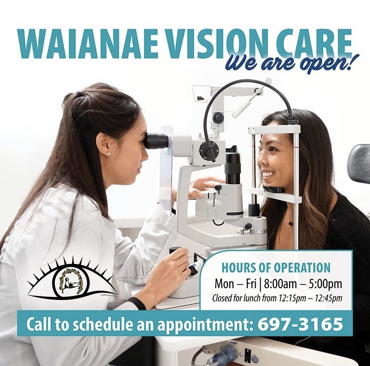
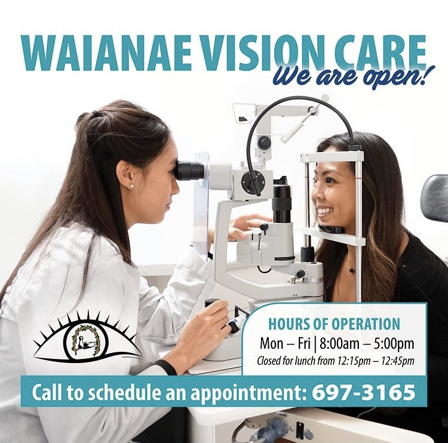

Work
Acanthamoeba polyphaga
Acanthamoeba polyphaga is a protozoa which has easily detectable genus classification due to its spiny projections but difficult to classify within the species level. It may infect individuals leading to infections such as Granulomatous Amebic Encephalitis (GAE) or Acanthamoeba keratitis
Effects of Computer Usage on Ocular Health
The 2010 National Education Technology Plan steadily replaces paper textbooks with study materials on computers. One risk of increased computer usage is increased Computer Vision Syndrome (CVS) symptoms. I researched multiple studies to analyze the effects of computer use on dry eye and eye strain and how these symptoms can progress to musculoskeletal pain, headaches, decreased quality of life, loss of confidence and even anxiety and depression. Currently, there is not much data on tablet use so I propose two future experiments to determine if tablets can also cause CVS ocular symptoms.
Macular Telangiectasia
Macular telangiectasia type 2 (MacTel type 2) is a bilateral retinal degeneration that is usually diagnosed in older adults presenting with symptoms of decreased vision and metamorphopsia. Clinical retinal examination can often be unrevealing. However, optical coherence tomography (OCT) reveals characteristic hyporeflective cavities temporal to the foveal center without retinal thickening. This case presents a relatively stable natural course of MacTel type 2 presented over an 8-year time period.

Retrograde Transneuronal Degeneration: Homonymous Hemianopia and Associated Ganglion Cell Loss Following Cerebrovascular Accident
Retrograde transneuronal degeneration occurs when injury to the central nervous system leads to loss of nerve fiber function and damage to presynaptic neurons. The damage could lead to ocular structural and functional impairment. Cerebrovascular accidents may lead to visual field defects. Clinical examination without imaging may not show structural damage. However, optical coherence tomography (OCT) exhibits retinal ganglion cell loss and associated field defects. This case presents a patient history of right-sided intracranial hemorrhagic stroke and associated left homonymous hemianopia corresponding to retinal ganglion cell loss due to transneuronal degeneration, indicating future management to include OCT.
Non-Exudative Age-Related Macular Degeneration and Low Vision Rehabilitation
Age-related macular degeneration is a retinal disease which can result in severe visual impairments. The structural deterioration can be seen both clinically and with imaging. Microperimetry is a useful tool to compare the structural and functional loss related to the disease. The functional loss may impair the patient’s ability to perform certain activities like reading and driving. However, low vision devices and rehabilitation may allow patients to regain the ability to perform these tasks. This case presents a patient with advanced non-exudative macular degeneration who wanted to improve his ability to complete daily activities. Low vision rehabilitation techniques such as visual training, adaptation, and low vision devices were utilized to make his daily activities easier.
Neurodegenerative Disease and the Eye
With neurodegenerative disease, death of neurons can lead to subsequent death of neurons with which they synapse. This can happen in either direction, either from the retina back to the visual cortex (anterograde) or from the cortex forward to the retina (retrograde). Learn more on how neurodegenerative diseases can cause trans-synaptic degeneration causing disorders in visual processing.
 
